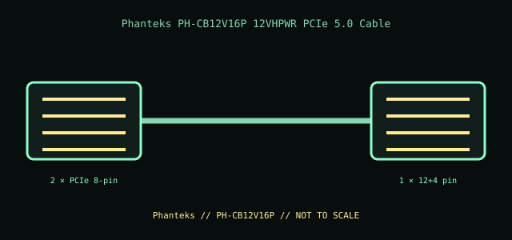

[ INTERNAL PC POWER CABLE // MODEL-SPECIFIC RECORD ]
Phanteks PH-CB12V16P 12VHPWR PCIe 5.0 Cable
Phanteks manufacturer part PH-CB12V16P. This record documents only this specified cable assembly; connector fit is not evidence of a matching pinout or PSU compatibility.

PSU SAFETY: Modular PSU-side cable pinouts are proprietary and model-family-specific. Never substitute a modular cable by brand, connector fit, color, or appearance; use only the exact PSU maker-approved cable for the exact PSU model and revision.
Manufacturer specifications
| Manufacturer part | Phanteks PH-CB12V16P |
|---|---|
| Connector / pin count | Two 8-pin PCIe PSU-side plugs to one 12+4-pin (16-contact) 12VHPWR GPU plug. |
| Wire gauge / length | 16 AWG power conductors; 750 mm (29.5 in). |
| Compatible PSU family | For only Phanteks AMP and Revolt PSU models above 850 W that Phanteks lists as compatible with this exact cable. This is a direct modular cable: PSU-side wiring is product-family-specific and must not be interchanged with another brand or unverified Phanteks family/revision. |
Power and safety caveats
Rated for up to 600 W by the manufacturer. Verify the exact PSU model, GPU demand, and PSU capacity in Phanteks documentation. Fully seat both ends; do not force, twist, sharply bend at the connector, or substitute another modular lead.
Case clearance and routing
Plan a 750 mm route and clearance for the 16-pin housing at the GPU. Preserve the manufacturer’s connector bend/side-panel clearance, avoid compression and sharp chassis edges, and ensure the card-end plug can remain fully seated.
Manufacturer specifications and manuals
- Phanteks — PH-CB12V16P 12VHPWR cableManufacturer product specification and compatible AMP/Revolt PSU-family notes.
- Phanteks — Revolt Cable Kit manual (PDF)Manufacturer installation and cable-family guidance; use the exact cable listing for this SKU.
- Phanteks — user manuals and supportManufacturer support index for PSU manuals and exact-model compatibility checks.
Use current manufacturer documentation for exact model revisions and installation. This archive illustration is a connector-identification schematic, not an electrical pinout.